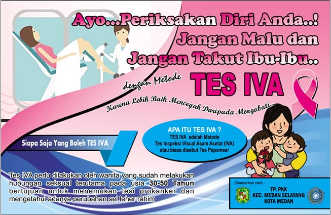
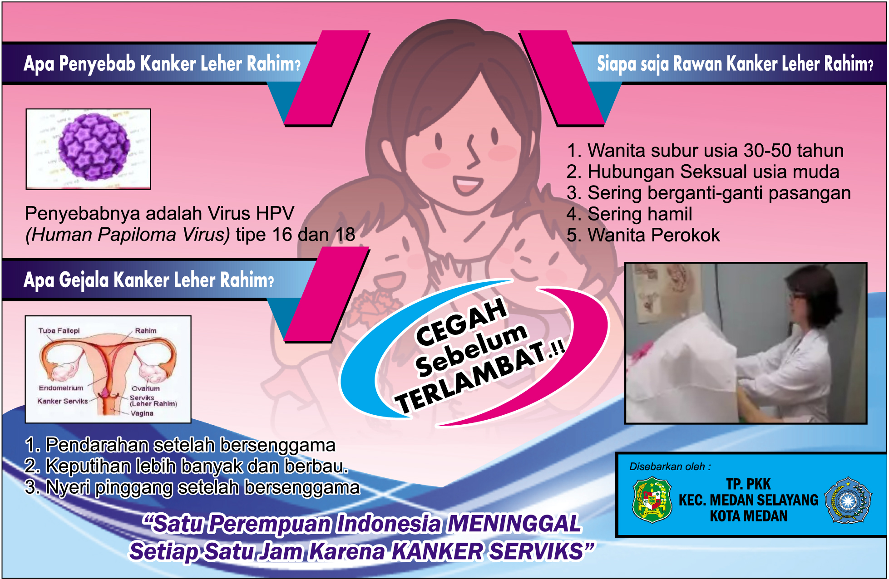

Apa itu IVA Test?
IVA Test (Inspeksi Visual Asam Asetat Test) merupakan cara sederhana untuk mendeteksi kanker leher rahim sedini mungkin.
Siapa Saja Yang Boleh IVA Test?
Test Iva perlu dilakukan oleh wanita yang sudah melakukan hubungan seksual terutama pada usia 30-50 Tahun bertujuan untuk menemukan lesi prokanker dan mengetahui adanya perubahan sel leher rahim.
Apa Penyebab IVA Test?
Penyebabnya adalah Virus HPV (Human Papiloma Virus) tipe 16 dan 18.
Kenapa Pilih IVA Test?
Pemeriksaan IVA Test murah, praktis, sangat mudah dilaksanakan dengan peralatan sederhana serta dapat dilakukan oleh sebagian besar tenaga kesehatan dan tidak harus dokter.
Apa Gejala IVA Test?
Pendarahan setelah hubungan seksual
Pendarahan diluar siklus menstruasi
Pendarahan setelah menepouse
Keluar cairan keputihan berlebih
Siapa Saja Rawan IVA Test?
Terinfeksi virus kanker serviks (HPV)
Wanita subur usia 30-50 tahun
Hubungan seksual usia muda
Sering berganti-ganti pasangan
Sering hamil
Wanita perokok
Bagaimana Cara Melakukan IVA Test?
Pemeriksaan IVA Test dilakukan oleh petugas kesehatan dengan melihat secara langsung (mata) leher rahim yang telah dioleskan asam asetat 3-5%
Akan terjadi perubahan warna pada leher rahim yang dapat diamati secara langsung dan dapat dibaca sebagai normal atau abnormal
Dibutuhkan waktu 1-2 menit untuk dapat melihat perubahan
Jika pada leher rahim terjadi perubahan warna atau tidak muncul plak putih, maka hasil pemeriksaan dinyatakan negatif
Sebaliknya jika berubah warna menjadi merah dan timbul plak putih, maka akan dinyatakan positif kelainan pra kanker
Petugas kesehatan akan memberikan rujukan medis sesuai hasilnya
Setelah Hasil IVA Test Keluar?
Bila hasil pemeriksaan positif (+), maka selanjutnya harus periksa IVA Test tiap 1 tahun
Bila hasil pemeriksaan negatif (-), maka selanjutnya harus periksa IVA Test tiap 5 tahun
Kontak
Lokasi :
Jl. Bunga Cempaka No. 54 A, Kel. Padang Bulan Selayang II, Kec. Medan Selayang, Kota Medan, Sumatera Utara 20131
Email :
medanselayangtppkk@gmail.com
Pusat Panggilan :
+62 813 6145 5669